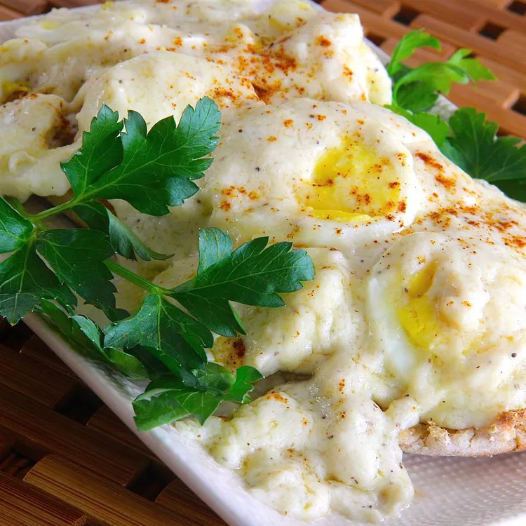

Hard Boiled Egg Casserole

Hard Boiled Egg Casserole for Brunch
This is an easy Easter brunch casserole that's low in carbs — ideal if any of your guests are following the keto
diet — yet high in flavor. Two types of cheese and a few spice cabinet staples, including dry mustard and garlic
powder, make all the difference to elevate this quick and easy casserole to holiday-worthy territory.
Ingredients
- 8 hard-boiled eggs, peeled and halved
- ¼ cup butter
- ¼ cup all-purpose flour
- 2 cups half-and-half
- ½ teaspoon salt
- ¼ teaspoon ground black pepper
- ¼ teaspoon garlic powder
- ¼ teaspoon ground black pepper
- 1 cup shredded Gruyere cheese
- ½ cup freshly grated Parmesan cheese
Cooking Steps!
- Prep Oven! Preheat oven to 350 degrees F (175 degrees C). Butter a 9-inch square
baking dish.
- Position eggs! Arrange eggs, cut-side down, in the prepared
baking dish.
- Whisk and Mix! Melt butter in a saucepan over medium-low heat. Whisk flour
into the melted butter until dissolved, 2 to 3 minutes. Gradually stir half-and-half into flour mixture
until sauce is thickened and smooth, about 5 minutes. Season sauce with salt, pepper, garlic powder, and
mustard. Stir Gruyere cheese into sauce until melted and smooth.
- Cheese It! Pour sauce over eggs and sprinkle Parmesan cheese over sauce.
- Bake. Bake in the preheated oven until bubbling and golden brown,
20 to 25 minutes.